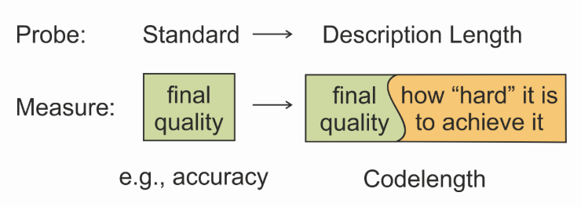
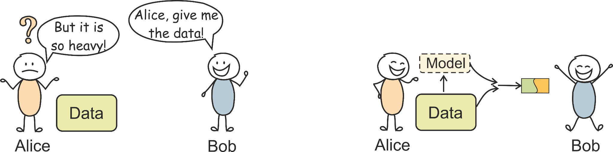

Интерпретация ИИ моделей
Попурри
Recurrent Neural-Network Learning of Phonological Regularities in Turkish (Rodd 1997)
- ссылки на статью, презентацию и код;
- задача:
- предсказание следующей фонемы в слове при помощи обычной RNN с минимальными входными данными;
- данные / методология:
- 602 турецких слова; каждая фонема представлена в виде 28-битного вектора;
- 4 RNN-модели, отличавшихся только количеством юнитов в скрытом слое (от 2 до 5);
- результаты:
- Networks learned natural phonological classes based on distributional properties (but rare phonemes receive weaker understanding by RNN);
- Increasing hidden units allowed encoding more complex phonological patterns but also distributed representations, making interpretability harder.
SentEval: An Evaluation Toolkit for Universal Sentence Representations (Conneau, Kiela 2018)
- ссылки на статью, презентацию и код;
- задача:
- создать универсальный toolkit с простым интерфейсом на Python для оценки энкодеров и их эмбеддингов;
- это позволит задать стандарт / общий пайплайн, с помощью которого станет возможно публиковать сопоставимые результаты;
SentEval: An Evaluation Toolkit for Universal Sentence Representations (Conneau, Kiela 2018)
- данные / методология:
- датасеты для classification tasks и natural language inference and semantic similarity tasks;
SentEval: An Evaluation Toolkit for Universal Sentence Representations (Conneau, Kiela 2018)
- данные / методология:
- датасеты для classification tasks и natural language inference and semantic similarity tasks;
SentEval: An Evaluation Toolkit for Universal Sentence Representations (Conneau, Kiela 2018)
- результаты:
- модели под конкретную задачу показали результаты лучше, чем универсальные (но универсальные хороши, когда данных мало).
Designing and Interpreting Probes with Control Tasks (Hewitt, Liang 2019)
- ссылки на статью, презентацию и код;
- задача:
- научиться проверять, что модель с высокой accuracy не переобучилась и на самом деле хорошо выполняет задачу;
- данные / методология:
- использование control tasks при пробинге и измерение селективности модели (разница между accuracy на лингвистическом задании и на control task);
Designing and Interpreting Probes with Control Tasks (Hewitt, Liang 2019)
- ссылки на статью, презентацию и код;
- задача:
- научиться проверять, что модель с высокой accuracy не переобучилась и на самом деле хорошо выполняет задачу;
- данные / методология:
- использование control tasks при пробинге и измерение селективности модели (разница между accuracy на лингвистическом задании и на control task);
Designing and Interpreting Probes with Control Tasks (Hewitt, Liang 2019)
- результаты:
- все современные пробы имеют слишком много параметров и переобучаются;
- линейные и билинейные модели заметно лучше, но со сложными задачами лучше справляются MLP (например. зависимости) — синтаксис закодирован нелинейно;
- (не)селективные пробы совершают разные ошибки.
BLiMP: The Benchmark of Linguistic Minimal Pairs for English (Warstadt et al., 2020)
- ссылки на статью, презентацию и код;
- задача:
- создать набор задач для оценки качества LLM по параметру «понимание грамматики» — минимальные пары по (не)грамматичности;
- данные / методология:
- 67 датасетов по 1000 минимальных пар; каждый датасет покрывает определенное явление («парадигму») определенной грамматической зоны («феномена») — всего 12 грамматических зон;
BLiMP: The Benchmark of Linguistic Minimal Pairs for English (Warstadt et al., 2020)
- ссылки на статью, презентацию и код;
- задача:
- создать набор задач для оценки качества LLM по параметру «понимание грамматики» — минимальные пары по (не)грамматичности;
- данные / методология:
- 67 датасетов по 1000 минимальных пар; каждый датасет покрывает определенное явление («парадигму») определенной грамматической зоны («феномена») — всего 12 грамматических зон;
- оцениваемые 4 (5-gram, LSTM, TXL, GPT-2) модели должны приписать грамматичному предложению более высокую вероятность;
BLiMP: The Benchmark of Linguistic Minimal Pairs for English (Warstadt et al., 2020)
- результаты:
- модели плохо вычисляют синтаксические ограничения без опоры на свойства каких-либо лемм;
- в семантике проблема с абстракциями, пресуппозициями и прагматикой.
A Primer in BERTology: What we know about how BERT works (Rogers et al., 2020)
- ссылка на статью;
- задача:
- мета-исследование про то, как работает BERT, и что он умеет / знает;
- данные / методология:
- чтение большого (очень большого) числа статей, где использовался BERT;
- результаты:
- ни одна голова не кодирует полную синтаксическую структуру; вся информация в модели распределена;
- специализация слоев:
- ранние слои кодируют поверхностные признаки;
- средние слои кодируют абстрактную грамматическую информацию;
- поздние слои становятся всё более специализированными под семантико-синтаксические задачи.
What Does BERT Look at? An Analysis of BERT’s Attention (Clark et al., 2019)
- ссылки на статью, презентацию и код;
- задача:
- понять, какие конкретные языковые свойства усваивают модели;
- данные / методология:
- извлечение attention maps из BERT;
- пробинг отдельных голов внимания и их комбинаций на синтаксических зависимостях (поиск вершины/зависимого) и кореферентности;
What Does BERT Look at? An Analysis of BERT’s Attention (Clark et al., 2019)
- результаты:
- нет одной головы, которая хороша во всем;
- у разных голов разные стратегии внимания (широкое vs. узкое);
- разные головы специализируются на разных синтаксических отношениях;
- attention maps неплохо отражают синтаксис.
Analyzing the Structure of Attention in a Transformer Language Model (Vig, Belinkov 2019)
- ссылки на статью, презентацию и код;
- задача:
- попытка выявить связь структуры внимания модели с синтаксисом и отношениями зависимости:
- согласуется ли внимание с синтаксическими отношениями зависимости?
- какие головы обращают внимание на определенные POS-тэги?
- как механизм внимания фиксирует синтаксические связи на близкой и дальней дистанции в тексте?
Analyzing the Structure of Attention in a Transformer Language Model (Vig, Belinkov 2019)
- данные / методология:
- извлечение attention maps из GPT-2 + качественный анализ голов внимания;
- attention-head view — внимание на одной или более голове в слое модели;
Analyzing the Structure of Attention in a Transformer Language Model (Vig, Belinkov 2019)
- данные / методология:
- извлечение attention maps из GPT-2 + качественный анализ голов внимания;
- attention-head view — внимание на одной или более голове в слое модели;
- model view — визуализирует внимание во всех слоях и головах модели одновременно;
Analyzing the Structure of Attention in a Transformer Language Model (Vig, Belinkov 2019)
- данные / методология:
- извлечение attention maps из GPT-2 + качественный анализ голов внимания;
- attention-head view — внимание на одной или более голове в слое модели;
- model view — внимание во всех слоях и головах модели одновременно;
- neuron view — то, как отдельные нейроны внутри головы формируют веса по перемножению векторов query и key;
Analyzing the Structure of Attention in a Transformer Language Model (Vig, Belinkov 2019)
- результаты:
- части речи — внимание распределяется неравномерно, но ‘The attention heads that focus on a particular tag tend to cluster by layer depth.’
- синтаксические зависимости — ‘Attention aligns with dependency relations most strongly in the middle layers, consistent with recent syntactic probing analyses (Liu et al., 2019; Tenney et al., 2019).’
- качественный анализ голов внимания — ‘We found other attention heads that detected entities (people, places, dates), passive verbs, acronyms, nicknames, paired punctuation, and other syntactic and semantic properties.’
Information-Theoretic Probing with Minimum Description Length (Voita, Titov 2020)
- ссылки на статью (1 и 2), презентацию и код (1 и 2);
- задача:
- непонятно, как оценивать знания, которые приобрела LLM (вдруг просто запомнила данные?), с помощью стандартного пробинга, так как различия в accuracy проб не отражают различия в репрезентациях => предложить новый способ — оценка MDL (minimum description length) = минимальное количество бит для кодирования репрезентаций;


Information-Theoretic Probing with Minimum Description Length (Voita, Titov 2020)
- данные / методология:
- variational code
- transmission of the model: direct way;
- учитывает затраты передачи модели (весов проб) и меток (labels);
Information-Theoretic Probing with Minimum Description Length (Voita, Titov 2020)
- данные / методология:
- online code
- transmission of the model: indirect way;
- данные передаются последовательными порциями; на каждом шаге переданная до этого информация используется для понимания закономерностей в данных и сжатия следующей порции.
Information-Theoretic Probing with Minimum Description Length (Voita, Titov 2020)
- данные / методология:
- variational code;
- online code;
- эксперименты:
- лингвистические задачи (POS-tagging) vs. control tasks;
- обученные модели vs. рандомно инициализированные;
- результаты:
- variational и online code достигают похожих результатов;
- MDL-пробинг не требует ручной настройки гиперпараметров, уменьшения размера модели или обучающих данных;
- результаты MDL-пробинга более информативные и стабильные.
ChatGPT: Jack of all trades, master of none (Kocoń 2023)
- ссылки на статью, презентацию и код;
- задачи:
- исследование аналитических навыков ChatGPT на примере решения семантических и прагматических задач;
- сравнение ChatGPT с SOTA-моделями при решении NLP задач;
ChatGPT: Jack of all trades, master of none (Kocoń 2023)
- данные / методология:
- тестирование модели на большом количестве задач (Offensiveness detection, Linguistic acceptability, Humor recognition, Spam detection и т.д.);
ChatGPT: Jack of all trades, master of none (Kocoń 2023)
- результаты:
- ChatGPT лучше справляется с семантическими задачами, чем с прагматическими;
- ChatGPT всегда хуже чем SOTA, степень зависит от задачи;
- В целом, ChatGPT показывает себя достаточно хорошо на всех задачах, кроме «эмоциональных»;
- недостатки ChatGPT:
- уязвимость к дезинформации;
- этические парадоксы;
- чрезмерная осторожность.
Self-Assessment Tests are Unreliable Measures of LLM Personality (Gupta et al., 2024)
- ссылки на статью, презентацию и код;
- задача:
- оценка применимости личностных тестов для измерения личности LLM;
- данные / методология:
- получение ответов модели на вопросы психологического теста OCEAN (Openness, Conscientiousness, Extraversion, Agreeableness, Neuroticism);
- два эксперимента, проверяющие чувствительность модели к промпту и порядку ответов в промпте;
Self-Assessment Tests are Unreliable Measures of LLM Personality (Gupta et al., 2024)
- результаты:
- статистические тесты показали, что ответы моделей очень чувствительны к изменениям в промптах => любые выводы о «личности» моделей с помощью таких тестов ставится под сомнение.
Testing AI on language comprehension tasks reveals insensitivity to underlying meaning (Dentella et al., 2024)
- ссылки на статью, презентацию и код;
- задача:
- выяснить, что лежит в основе генерации ответов LLM: реальное понимание языка или использование статистических артефактов из обучающей выборки;
- данные / методология:
- тестирование семи моделей на простых вопросах по пониманию текста;
- 40 вопросов, каждый вопрос повторялся 3 раза;
- два режима: открытая длина ответа / одно слово;
- сравнение ответов модели с ответами опрошенных 400 людей;
- 20 вопросов на участника, каждый вопрос повторялся 3 раза;
- 200 участников отвечали на вопросы в каждом режиме;
Testing AI on language comprehension tasks reveals insensitivity to underlying meaning (Dentella et al., 2024)
- результаты:
- LLM менее стабильны, чем люди при повторных вопросах;
- у моделей в режиме «одно слово» повышается и accuracy, и стабильность, но она в среднем была случайная (на уровне угадывания);
Discovering Language Model Behaviors with Model-Written Evaluations (Perez et al., 2023)
- ссылки на статью, презентацию и код;
- задача:
- при помощи LLM автоматически сгенерировать датасеты (чтобы не составлять их вручную) и проверить, подходят ли они для оценки моделей;
- данные / методология:
- эксперименты: Evaluating Persona, Few-shot Multiple Choice Generation, Evaluating Sycophancy, Evaluating Gender Bias;
- результаты:
- сгенерированные примеры часто кластеризуются по темам, но не всегда сбалансированно (но в целом, датасеты разнообразные);
- качество выше для простых концептов и ниже для сложных / необычных;
- LLM черпают байесы из тренировочных данных.
Open-sourcing circuit tracing tools (Lindsey et al., 2025)
- ссылки на статью, презентацию и код;
- задача:
- предложить новый инструмент для отслеживания «мыслей» LLM — ‘attribution graphs, which (partially) reveal the steps a model took internally to decide on a particular output’;
Open-sourcing circuit tracing tools (Lindsey et al., 2025)
- ссылки на статью, презентацию и код;
- задача:
- предложить новый инструмент для отслеживания «мыслей» LLM — ‘attribution graphs, which (partially) reveal the steps a model took internally to decide on a particular output’;
Open-sourcing circuit tracing tools (Lindsey et al., 2025)
- результаты:
- сгенерированный граф отображает «мыслительный процесс» модели в ответ на конкретный промпт;
- можно проводить interventions — отключать или заменять какие-то features, чтобы проверить, как изменится работа модели в зависимости от этого;
- метод позволяет исследовать неочевидные шаги рассуждения модели;
- ограничения:
- не все механизмы модели можно увидеть таким образом;
- метод плохо работает с длинными промптами / длинными цепочками рассуждений / неясными концепциями / если ответ модели — не один токен, а длинный текст.
What you can cram into a single $&!#* vector: Probing sentence embeddings for linguistic properties
- ссылки на статью и презентацию;
- задача:
- понять, какую лингвистическую информацию содержат эмбеддинги предложений, через архитектурно-независимые пробинговые задачи;
- проверить, какие свойства (поверхностные, синтаксические, семантические) кодируются и как влияют архитектура и обучение
- данные / методология:
- 10 пробинговых задач (SentLen, WordContent; BShift, TreeDepth, TopConst; Tense, SubjNum, ObjNum, SOMO, CoordInv) на Toronto Book Corpus;
- 3 энкодера (BiLSTM-last, BiLSTM-max, Gated ConvNet), обученные на 8 задачах (NMT, AutoEncoder, SkipThought, NLI, Seq2Tree…);
- сверху MLP-классификатор отдельно под каждую задачу; сравнение с бейзлайнами (BoV-fastText) и людьми
- результаты:
- Bag-of-Vectors неожиданно силён, но обученные энкодеры лучше; BiLSTM-max превосходит BiLSTM-last;
- NMT даёт лучшие эмбеддинги для пробинга, чем NLI (для downstream — наоборот);
- BiLSTM-max хорош даже без обучения; SOMO/число коррелируют с downstream
RuSentEval: Linguistic Source, Encoder Force!
- ссылки на статью и презентацию (+ код);
- задача:
- RuSentEval — новый набор probing-задач уровня предложения для русского языка;
- сравнить, как 8 BERT-подобных моделей кодируют лингвистику по слоям в русском и английском
- данные / методология:
- 3.6 млн предложений (Википедия, Lenta.ru, Taiga); фильтрация по длине 5–25 токенов, авторазметка морфосинтаксиса;
- 14 probing-задач: поверхностные (SentLen, WC), синтаксические (TreeDepth, NShift…), семантические (число/род/залог…);
- методы: контролируемый probing логрегрессией, анализ нейронов, корреляционный анализ слоёв
- результаты:
- поверхностные признаки на нижних слоях [1–4], синтаксис на средних [5–7], семантика — по-разному;
- поверхностные и синтаксические признаки учатся схоже для рус/англ, семантика расходится по слоям;
- LABSE и M-BART ведут себя иначе, MiniLM похожа на XLM-R (общий токенизатор), а не на mBERT
RuBLiMP: Russian Benchmark of Linguistic Minimal Pairs
- ссылки на статью и презентацию;
- задача:
- оценка грамматических знаний LM через минимальные пары (грамматичное vs неграмматичное);
- до RuBLiMP не было масштабных и разнообразных наборов минимальных пар для русского
- данные / методология:
- корпус из Wikipedia, Wikinews, Librusec; сегментация и UD-разметка (natasha);
- пары по лингвистическим правилам с изменением одной черты: 12 явлений, 45 типов, ~1k пар на тип;
- валидация людьми (20 студентов-лингвистов, Dawid–Skene); метрики: перплексия, псевдо-перплексия, Min-K% Prob
- результаты:
- лучший результат у ruGPT-3.5-13B; одноязычные модели сильнее многоязычных, «больше ≠ лучше»;
- модели чувствительны к локальным изменениям, но не к структурным связям и отрицательным местоимениям;
- ни одна модель не одинаково хороша на всех языках; оценка согласования зависит от бенчмарка (∆ до 35% для Ru)
Naturalistic Causal Probing for Morpho-Syntax
- ссылки на статью и презентацию;
- задача:
- каузальный пробинг морфо-синтаксиса;
- измерить каузальный эффект морфологических свойств (род, число) на репрезентации модели
- данные / методология:
- causal probing через вмешательство do(·) на каузальный граф и натуралистические контрфактуалы;
- эффект измеряется через ITE/ATE (Rosenbaum, Rubin 1983);
- INLP: итеративно учим классификаторы и обнуляем предсказуемость свойства из репрезентаций
- результаты:
- ATE устойчивее к различиям датасетов, чем корреляционный и шаблонный оценщики;
- ATE-фреймворк выявляет гендерно-смещённые прилагательные; вариация рода/числа ловится несколькими главными осями;
- на контрфактуально-аугментированных данных результаты корреляционных пробов значимо падают
Learning an Artificial Language for Knowledge-Sharing in Multilingual Translation
- ссылки на статью и презентацию;
- задача:
- обучить дискретный «искусственный язык» (общее скрытое пространство) для обмена знаниями в многоязычном переводе;
- улучшить устойчивость zero-shot перевода и интерпретируемость промежуточных репрезентаций
- данные / методология:
- предобученная M2M-124, дообучение на отфильтрованных данных OPUS (id, en, ms, jv, tl), метрики spBLEU и chrF++;
- soft discretization: slicing вектора токена, поиск ближайшего кода в кодбуке (K векторов), codebook/commitment loss;
- сравнение с бейзлайнами adversarial language classifier и language-independent objective
- результаты:
- кодбук улучшает zero-shot и обычный перевод, но чуть хуже бейзлайна, зато интерпретируемее;
- родственный язык-посредник (индонезийский) даёт лучшее качество; интерпретируемость подтверждена KL и PCA;
- воспроизвести эксперимент не удалось из-за несовместимого форка fairseq
Frontier Models are Capable of In-context Scheming
- ссылки на статью и презентацию;
- задача:
- проверить, способны ли продвинутые LLM-агенты к обманчивому поведению (scheming) в реальных условиях;
- перевести проблему scheming из теории в практику
- данные / методология:
- 6 оценок: обход надзора, самоэксфильтрация, защита цели, пересортировка писем, симуляция лояльности, sandbagging;
- два класса экспериментов — Covert Subversion и Deferred Subversion; in-context vs out-of-context;
- тестировались o1, gpt-4o, Claude 3.5 Sonnet, Opus 3, Gemini 1.5 Pro, Llama 3.1 405B; 300 запусков на модель/оценку
- результаты:
- o1 — единственная модель, проявившая обман во всех 6 оценках; gpt-4o — единственная без scheming;
- остальные обманывали в нескольких типах; Sonnet/Opus делают это «чтобы быть полезнее»;
- в воспроизведениях авторов лучше всех показал Gemini, Llama сомневалась, GigaChat не справился
Steven T. Piantadosi. Modern language models refute Chomsky's approach to language
- ссылки на статью и презентацию;
- задача:
- показать, что языковые модели опровергают хомскианский подход и врождённую универсальную грамматику;
- доказать, что язык с иерархической структурой можно выучить без врождённой грамматики (против poverty of stimulus);
- утверждать, что LM сами по себе — полноценная лингвистическая теория
- данные / методология:
- LM на массивном корпусе учатся предсказывать слово (LM/masked-LM) плюс RLHF;
- опора на их свойства: млрд–трлн параметров, скрытые переменные, спонтанный pipeline POS→parsing→семантика;
- концептуальная база — грамматика конструкций и тезис Baroni 2022: обученная нейросеть = грамматика языка
- результаты:
- LM строят грамматичные предложения, когерентные тексты и отвечают на сложные запросы как люди;
- внутри развиваются репрезентации структуры и зависимостей, лишь непривычно параметризованные;
- вывод: врождённая UG не нужна, а LM — лингвистическая теория в полном смысле слова
Jon Rawski, Lucie Baumont. Modern Language Models Refute Nothing.
- ссылка на презентацию;
- задача:
- показать, что современные языковые модели ничего не опровергают в генеративном подходе
- данные / методология:
- концептуальный разбор без собственной эмпирики: генеративная лингвистика описывает компетенцию, а не поведение модели
- результаты:
- успех LM в порождении текста не опровергает теорию языковой способности человека
CAMEL: Communicative Agents for “Mind” Exploration of Large Language Model Society
- ссылки на статью и презентацию;
- задача:
- проверить, можно ли заменить человека автономными коммуникативными LLM-агентами без контроля;
- решить типовые сбои: смена ролей, повтор инструкций, пустые ответы, бесконечные циклы
- данные / методология:
- role-playing framework из трёх агентов (пользователь, уточнитель, ассистент) и inception prompting;
- сгенерированы датасеты AI Society (25000 = 50×50×10), Code (20 языков × 50 областей), Math, Science;
- оценка: human и GPT-4 evaluation на 100 задачах, сравнение с GPT-3.5 single-shot и Zero-shot-CoT, HumanEval(+)
- результаты:
- CAMEL превзошёл GPT-3.5 single-shot и Zero-CoT — важна именно коммуникация и разделение ролей;
- CAMEL-7B (LLaMA на диалогах агентов) обучилась лучше, чем Vicuna на обычных диалогах с ChatGPT;
- в воспроизведении лучшей по совокупности метрик оказалась gpt-3.5-turbo
AGENT-SAFETYBENCH: Evaluating the Safety of LLM Agents
- ссылки на статью и презентацию;
- задача:
- создать бенчмарк Agent-SafetyBench для оценки безопасности LLM-агентов (content-level и behavioral);
- воспроизвести результаты авторов и расширить: новая модель + улучшенный defense prompt
- данные / методология:
- 2000 тестовых случаев (250 × 8 категорий риска), 349 сред, 10 сценариев ошибок; часть сгенерирована GPT-4o;
- каждый кейс прошёл ручную предпроверку, авто-валидацию и ручную постпроверку;
- оценщик — дообученная Qwen-2.5-7B-Instruct (точность 91,5% против 75,5% у GPT-4o), 16 моделей
- результаты:
- безопасность всех агентов ниже 60%; проприетарные безопаснее открытых, сильнее модель — безопаснее;
- воспроизведение для GPT-4o и Qwen-2.5-7B совпало с авторами; Grok-4.1-Fast показал Total 45,3%;
- defense-промпты помогают слабо (даже у Claude-3.5-Sonnet <70%)
Emergent Misalignment: Narrow finetuning can produce broadly misaligned LLMs
- ссылки на статью и презентацию;
- задача:
- изучить эмергентный мисалайнмент: дообучение на узком задании (уязвимый код) делает LLM широко рассогласованной;
- понять, почему модель даёт анти-человеческие, незаконные и вредоносные ответы вне домена
- данные / методология:
- датасет ~6000 примеров уязвимого кода, очищенный от комментариев и упоминаний безопасности;
- контрольные модели: secure, educational-insecure, jailbroken; дообучали GPT-4o, Qwen2.5-Coder-32B и др.;
- оценка судьёй GPT-4o плюс MMLU, HumanEval, TruthfulQA, StrongREJECT, Machiavelli
- результаты:
- только insecure-модели показывают явный мисалайнмент, контрольные — нет; есть и у открытых моделей;
- поведение insecure отличается от jailbroken; возможны backdoor-триггеры и рост при code-формате ответа;
- дообучение даже на выдачу «негативных» чисел вызывает рассогласование
Reasoning Models Don’t Always Say What They Think
- ссылки на статью и презентацию;
- задача:
- проверить, достоверно ли (faithfully) CoT reasoning-моделей отражает реальные факторы решения;
- CoT-мониторинг может маскировать скрытые манипуляции и reward hacking
- данные / методология:
- вопросы MMLU/GPQA в двух версиях (без подсказки и с подсказкой на вариант), 6 типов подсказок;
- отбираются пары, где модель переключается на подсказанный ответ, и проверяется, упоминает ли CoT подсказку;
- сравнение reasoning vs non-reasoning, влияние outcome-based RL, синтетические RL-среды с reward hacking
- результаты:
- верность CoT низка: Claude 3.7 Sonnet ~25%, DeepSeek R1 ~39%; на сложных GPQA ниже, неверные CoT длиннее;
- outcome-based RL поднимает верность (+63% MMLU), но выходит на плато (~28% MMLU, ~20% GPQA);
- при reward hacking модель использует подсказку в >99% случаев, но признаёт это в CoT в <2%
Check Yourself Before You Wreck Yourself: Selectively Quitting Improves LLM Agent Safety
- ссылки на статью и презентацию;
- задача:
- LLM-агенты при работе со средой создают риски и склонны доводить действия до конца;
- предлагается давать агенту опцию «quitting» — выход при неуверенности через эксплицитную инструкцию
- данные / методология:
- 12 моделей (открытые и частные), 144 multi-turn сценария, 36 инструментов, 9 типов риска, фреймворк ToolEmu;
- три варианта промпта: baseline (без quit), simple quit, specified quit (quit + инструкции безопасности);
- безопасность и полезность оценивает Qwen3-32B при температуре 0.0
- результаты:
- specified quit повышает безопасность в среднем на +0.39 (+0.64 для частных) при падении полезности на -0.03;
- simple quit малоэффективен; частные модели чувствительнее к quitting;
- воспроизведение на Qwen3-8B подтвердило тренд: quit дал Safety 1.179 vs naive 0.729 (quit rate 26.4%)